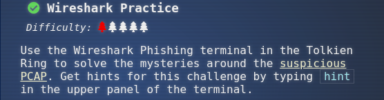
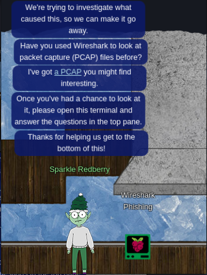
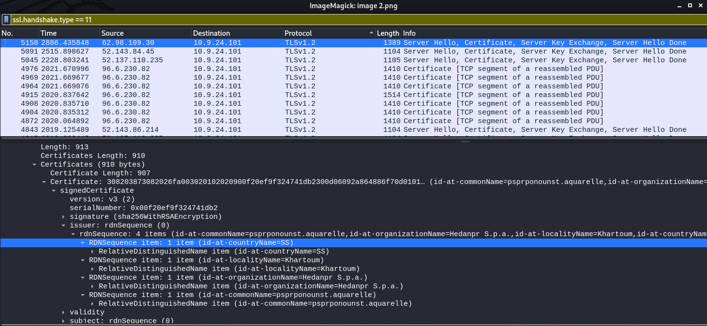
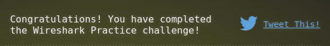

Recover the Tolkien Ring
1.1 Wireshark Practice

Use the Wireshark Phishing terminal in the Tolkien Ring to solve the mysteries around the suspicious PCAP. Get hints for this challenge by typing hint in the upper panel of the terminal.

Solve
Download the pcap file: https://storage.googleapis.com/hhc22_player_assets/suspicious.pcap
Terminal answers
Task: Analyze the Wireshark file and Answer the Elf's Questions! To complete your task, download the file from your badge or use this command line to answer the questions. Tips: 1. Each question may have hints. If you want another hint from the elf, just type hint in the upper pane. 2. If you need help with Wireshark filters you can go here: https://wiki.wireshark.org/DisplayFilters 3. If you need help with tshark filters, try this cheat sheet: https://cheatography.com/mbwalker/cheat-sheets/tshark-wireshark-command-line/ 4. Of course, SANS has lots of cheat sheets that can help: https://www.sans.org/blog/the-ultimate-list-of-sans-cheat-sheets/ 5. And remember, you can use Wireshark filters in tshark.
Tmux orientation: For this terminal, you can use the mouse to switch or resize panes. For clipboard use, you can shift-click and drag, then Ctrl+c to copy. Use Ctrl+Shift+v to paste. Normal tmux shortcuts ( Ctrl+b+↑ or ↓ ) work as well.
1.- There are objects in the PCAP file that can be exported by Wireshark and/or Tshark. What type of objects can be exeported from this PCAP?
ANSWER: http
Solve: Just read the links and hints and info provided Hint 1: https://unit42.paloaltonetworks.com/using-wireshark-exporting-objects-from-a-pcap/ Hint 2: We're looking for a protocol like FTP, HTTP, SMB, etc. Hint 3: https://osqa-ask.wireshark.org/questions/35846/how-can-i-export-http-objects-via-command-line/
2.- What is the file name of the largest file we can export?
ANSWER: app.php
Solve: Use tshark commandliner $ tshark -r pcap_challenge.pcap --export-objects "http,http"
Hint 1: https://unit42.paloaltonetworks.com/using-wireshark-exporting-objects-from-a-pcap/
Hint 2: If working in the terminal, you may need to combine tshark commands with other Linux commands
3.- What packet number starts the app.php file?
ANSWER: 687
Solve: Use wireshark: Export HTTP options -> see the number of packets [../snip]
Hint 1: In Wireshark, the Export | HTTP object list shows start packet numbers
Hint 2: When using tshark look for (text/html) in the output
4.- What is the IP pf the Apache Server?
ANSWER: 192.185.57.242
Solve: Just use wireshark to visualize the IP address with Apache Server
Hint 1: Search for 'apache' with Wireshark's Find function
Hint 2: Remember Linux is case-sensitive
Hint 3: Try using http.request and http.host
5.- What file is saved to the infected hosts?
ANSWER: Ref_Sept24-2020.zip
Solve: See inside app(1).php, data is encoded
Hint 1: Look inside the first TCP stream
Hint 2: The answer is a .zip file
Hint 3: Look inside the files that you exported using tshark
Hint 4: https://unit42.paloaltonetworks.com/wireshark-tutorial-dridex-infection-traffic/
6.- Attackers used bad TLS certificates in this traffict. Which countries were thet registered to6? Submit the names of the countries in alphabetical order separated by a commas Ex: Norway, South Korea).
ANSWER: Ireland, Israel, South Sudan , United States
Solve: Use tshark commandliner $ tshark -r suspicious.pcap -Y "ssl.handshake.type == 11" <- or better using wireshark and see the options on Certificate Section:
Hint 1: Look up the country code
Hint 2: Look for cookies in https
Hint 3: Filter for tls handshake for certificate, https://subscription.packtpub.com/book/networking-and-servers/9781785887819/4/ch04lvl1sec27/the-ssl-tls-handshake
Hint 4: When using tshark, pipe results to grep, awk, sort, or any other tools that can help filter through the data
SS (South Sudan), US (United States), IL (Israel), IE (Ireland)

7.- Is the host infected?
ANSWER: yes
